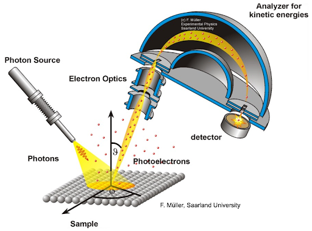

Assessment of Thin Si₃N₄ PVD Coatings
Experimental characterization of thin silicon nitride coatings deposited on silicon wafers, with a focus on contamination detection, Si/N stoichiometry, coating thickness and interface quality using X-ray Photoelectron Spectroscopy.

Project Overview
This laboratory project focused on the assessment of two thin Si₃N₄ PVD coatings deposited on silicon wafers. The two films showed different visual appearances and different electrical behaviour, which motivated a deeper investigation of their surface chemistry and interface quality.
The main goal was to determine whether the observed differences were caused by contamination, deviations from the expected silicon nitride stoichiometry, or changes in coating thickness and interface quality. The work combined survey spectra, high-resolution spectra and depth profiling to build a structured interpretation of both samples.
Methodology
X-ray Photoelectron Spectroscopy was selected as the main characterization technique because it provides access to surface chemical composition, oxidation states, contamination detection and the Si/N atomic ratio. In addition to surface information, depth profiling was used to follow the evolution of elemental concentrations through the film thickness and across the coating/substrate interface.
The workflow included survey spectra to identify the main elements, peak correction using the carbon reference, and depth profile interpretation using the evolution of nitrogen, silicon, oxygen and carbon as a function of sputter time. This made it possible to compare both samples consistently and identify differences in thickness and interface quality.
Investigation Goals
The study was structured around three main questions: whether carbon or oxygen contamination was present, whether the coatings matched the expected Si₃N₄ stoichiometry, and whether the interface with the silicon substrate was clean and well defined.
- Detect possible carbon and oxygen contamination
- Determine the Si/N stoichiometry of the coating
- Investigate the Si₃N₄/Si interface quality
- Explain the origin of the visual color difference between samples A and B
Main Results
Both samples showed comparable chemical compositions and both were slightly silicon-rich compared with ideal stoichiometric Si₃N₄. This means that stoichiometry alone does not explain the color difference observed between the two wafers.
The most relevant difference was the film thickness: sample A was found to be significantly thicker than sample B, by roughly 100 nm. In addition, sample A exhibited a sharper transition between coating and substrate, while sample B showed a broader interface with signs interpreted as redeposition of contaminants during sputtering.
Engineering Interpretation
From an engineering point of view, the project shows how surface analysis can distinguish between several possible causes of variation in thin-film performance. Even though oxygen and carbon were detected, these contaminants were not the dominant explanation for the visible difference between the samples.
The analysis instead pointed toward thickness and interface definition as the decisive parameters. Sample A presented a clearer and sharper coating-to-substrate transition, while sample B showed a broader gradient and evidence of redeposition effects, suggesting a less controlled layer quality.
Image Gallery
